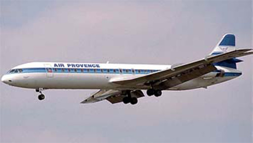

Caravelle 12

- Разработчик: Aerospatiale
- Страна: Франция
- Первый полет: 1970
- Тип: Среднемагистральный пассажирский самолет
Самой длинной из всех вариантов "Каравеллы" стала модель 12, прототип которой впервые поднялся в небо 29 октября 1970-го. В январе того же года французские авиационные фирмы "Сюд Авиасьон", "Норд Авиасьон" и SEPEP объединились в новую организацию, названную "Аэроспасьяль", поэтому модель 12 появилась на рынке как "Каравелла" 12 фирмы "Аэроспасьяль". Разработанная на базе "Супер В", она отличалась удлиненным до 36,24м фюзеляжем, за счет двух новых секций: 2-метровой перед и 1,21 м за крылом. Взлетная масса по сравнению с моделью "Супер В" не увеличилась.
Установка двигателей JT8D-9 с тягой 6580 кгс улучшила летные характеристики самолета. "Каравелла" 12 допускала перевозку 128 пассажиров в туристском классе, но обычно устанавливали 118 кресел, предоставляя пассажирам больше комфорта. Эксплуатировались эти машины и в смешанном исполнении: с салонами первого и туристского классов.
"Каравеллой" 12 завершился в 1973 г. выпуск самого знаменитого французского пассажирского самолета. Из 280 изготовленных машин 216 относились к первому поколению с двигателями семейства "Эвон". Для европейской фирмы это приличный коммерческий успех. ТРДД хоть и повысили летные характеристики самолета и экономичность перевозок, однако не оправдали надежд разработчиков. Модификации "Каравеллы" с двухконтурным моторами, особого распространения не получили. Это были поставки несколькими малыми партиями большому числу традиционных заказчиков. К началу 70-х годов "Каравеллы" уступали на мировом рынке самолетам нового поколения для средних и коротких линий, изначально сконструированным под ТРДД.
| Летно технические характеристики | |
|---|---|
| Модификация | Caravelle 12 |
| Размах крыла максимальный, м | 34.30 |
| Длина, м | 36.24 |
| Высота, м | 9.00 |
| Площадь крыла, м2 | 147.87 |
| Масса, кг | |
| - пустого самолета | 31800 |
| - нормальная взлетная | 58000 |
| Тип двигателя | 2 ТРД Pratt Whitney JT8D-9 |
| Тяга, кгс | 2 х 6580 |
| Максимальная скорость, км/ч | 825 |
| Практическая дальность, км | 2750 |
| Практический потолок, м | 9750 |
| Экипаж, чел | 3 |
| Полезная нагрузка: | 104 пассажира в в кабине двух классов или 130 в экономическом классе или 140 максимально или 13200 кг груза |